presenta
Studi Televisivi Voxson
Via di Tor Cervara 286
20 - 22 Marzo 2026
Scopri le opere selezionate per la seconda edizione del Marte Film Festival. Un viaggio attraverso storie inedite e sguardi visionari.
Esplora la SelezioneIl trofeo del Marte Film Festival non è solo un riconoscimento, ma un'opera d'arte unica che unisce tecnologia spaziale e scultura visionaria.
Scopri l'OperaResta aggiornato sulle ultime novità, anteprime esclusive e momenti dietro le quinte del festival.